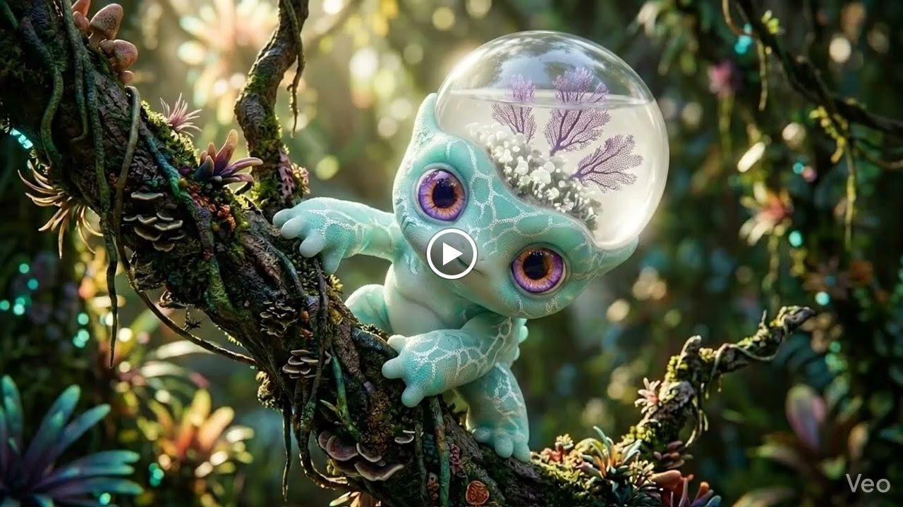
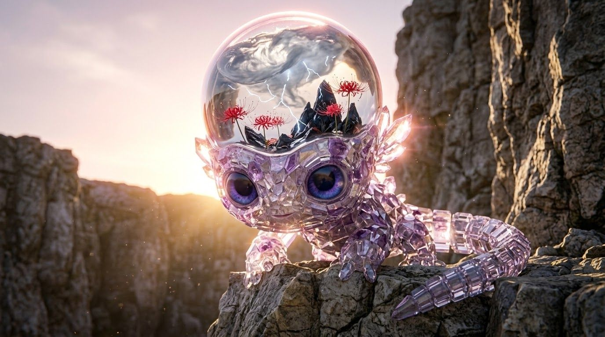
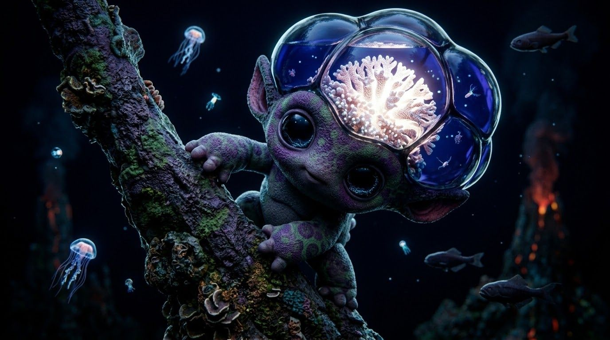
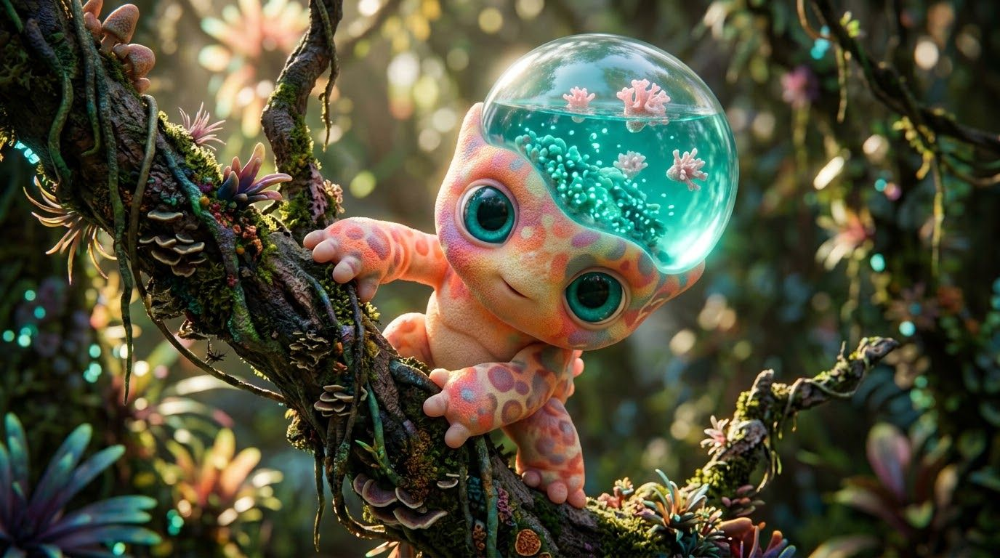
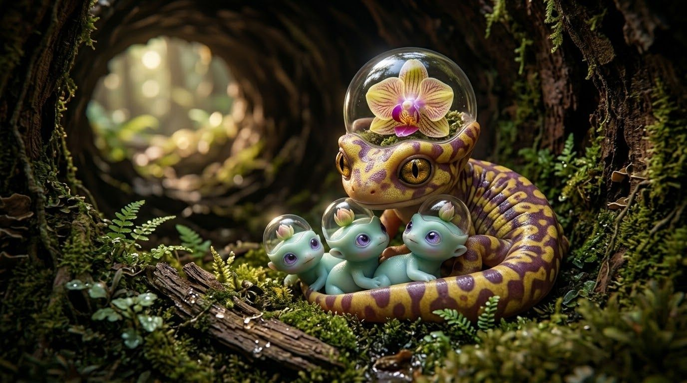
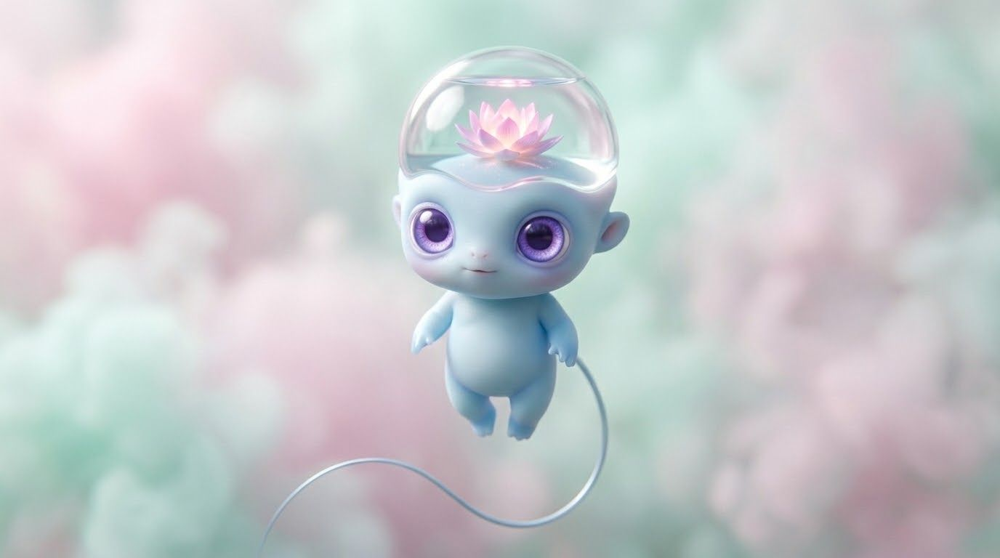
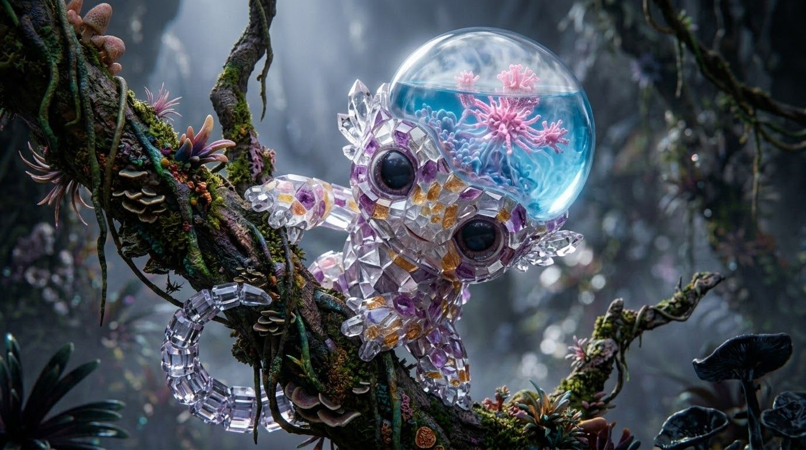
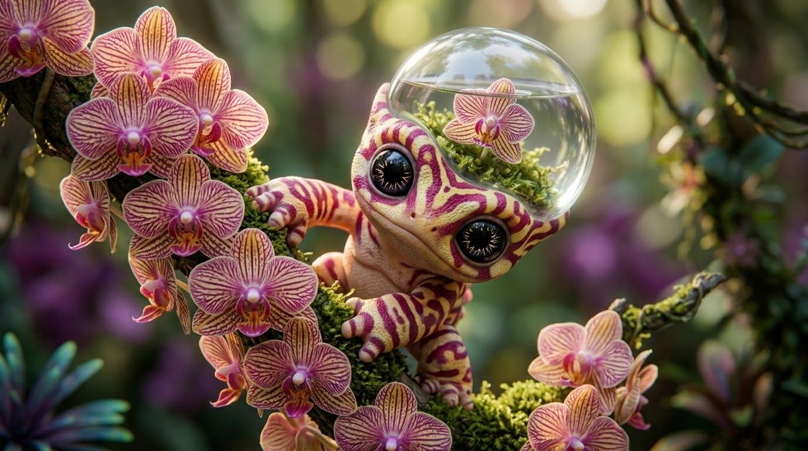
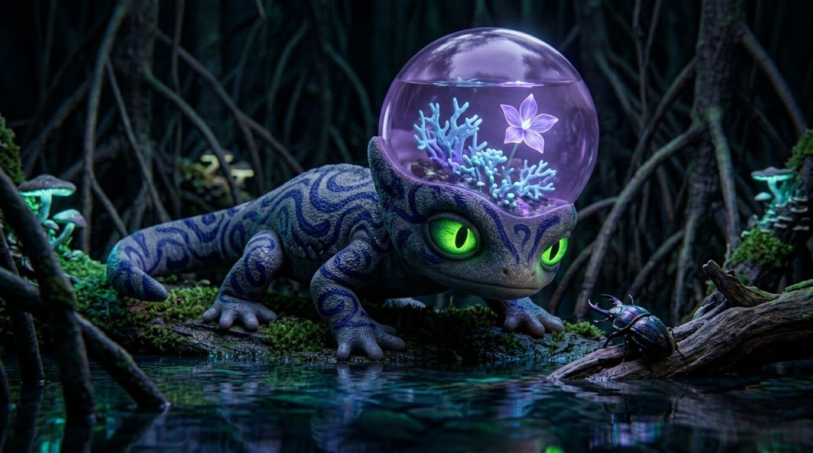

Daydreams · Made with AI
Terrarium Head Newts
Newts with tiny gardens growing in glass domes on their heads.


















Made with AI: Google Flow, OpenArt, Veo and Seedance, depending on the piece.